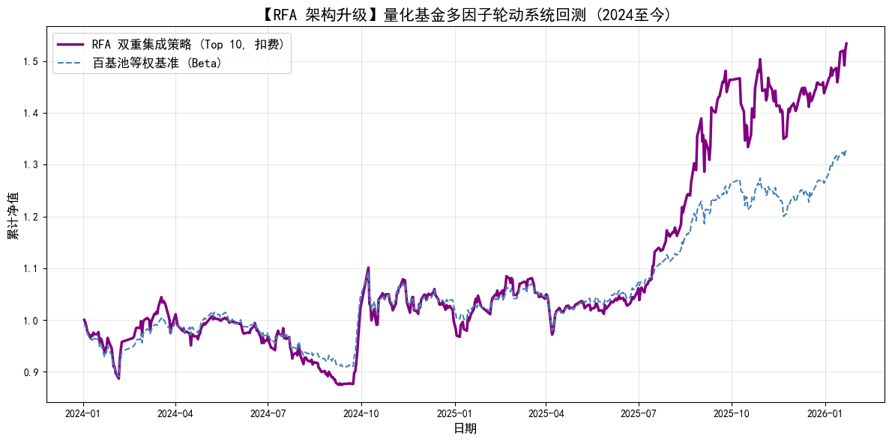
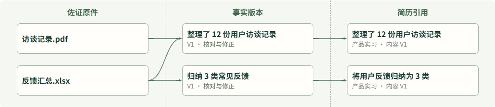

FINANCIAL TECHNOLOGY & QUANT · 懂工程验证的金融统计人
立足金融与统计逻辑，用可审计管道验证策略与风险。
我是王金凯，金融学本科、统计学硕士在读。我关注收益分布的高阶矩、交易摩擦与样本偏差，能独立用 Python 搭建回测框架、控制变量评测与事件驱动数据管道，把金融假设转化为可复核的实证结论。
北京 · 首都经济贸易大学统计学硕士在读 · 预计 2027.06 毕业
8 因子
含偏度/峰度高阶矩
日频截面标准化
25 项
预测市场四类评测指标
覆盖度/准确度/信号/模拟交易
6 组
控制变量对照实验
核心预测指标相对改善约 10%
QUANT & FINTECH CAPABILITIES
金融统计底子打底，工程管道独立验证。
既理解资产定价、尾部风险与交易摩擦，
也能自己写代码完成数据清洗、建模与归因。
金融与统计基础
金融学本科 + 统计学硕士，系统掌握公司理财、金融风险管理、计量经济学、时间序列分析与多元回归。
Python 金融时序处理
熟练使用 pandas、NumPy 完成净值复权对齐、小时级重采样、异常波动点筛选与横截面 Z-Score 标准化。
机器学习与回测审计
熟悉 Scikit-learn（随机森林、AdaBoost 等），重视 `shift(1)` 防前视偏差、换手成本扣除与生存者偏差排查。
预测市场与事件驱动
具备 Polymarket 价格序列与新闻事件关联分析经验，结合流动性、买卖价差与风险审计优化预测判断。
实验设计与策略评估
擅长设计递进式控制变量实验，熟悉 Brier Score、方向判断、夏普比率、最大回撤与区间覆盖率等评估口径。
AI 辅助研究自动化
运用 Claude Code、OpenClaw 等工具搭建事件信源校验、飞书落表与 LLM 博弈评测等可复用研究工作流。
SELECTED RESEARCH
研究有效的方法，也诚实检验方法的边界。
呈现真实回测曲线、实验设计与偏差审计，
让每一项结论都有数据管道支撑。
01
独立研究项目
量化策略开发
2026.01 — 2026.02
53.41%
历史保存累计收益（基准 32.75%）
公募基金轮动：把高阶统计矩转化为可检验策略
传统“均值-方差”容易忽略基金收益的左尾暴跌风险。如何引入偏度、峰度等高阶矩构造因子，并在换手摩擦下检验集成排序方案？
- Python
- Random Forest + AdaBoost
- 高阶统计矩
- 横截面标准化

Notebook 已保存净值对比图（最终样本 92 只，2024 年起样本外测试，Top-10 等权 / 20 日调仓 / 按权重变动 × 0.15% 扣费）。点击可查看大图。
| 历史保存指标 | RFA 轮动策略（Top-10 扣费） | 样本等权基准（Benchmark） | 研究解读 |
|---|
| 累计收益 | 53.41%（净值 1.5341） | 32.75%（净值 1.3275） | 绝对收益显著跑赢等权基准 |
| 年化夏普比率 | 1.07 | 1.07 | 集中持仓带来更高波动，风险调整收益持平 |
| 区间换手率 | 35.60 倍 | — | 对真实申赎费率与调仓频率高度敏感 |
金融与数据管道
AkShare 累计净值防分红失真 → 8 维统计因子（动量、波动、回撤、偏度、峰度、夏普）→ 日频横截面 Z-Score 剥离 Beta → RFA 集成排序 → `shift(1)` 延迟执行并扣费。
主动偏差审计
明确识别三项局限：现存池 `len(data)>800` 无法消除生存者偏差；时间切分处存在标签跨界风险；0.15% 线性扣费未刻画真实持有期赎回费率阶梯，已规划 Purged Walk-Forward 改进。
累计净值复权
→
8 维高阶矩因子
→
日频截面 Z-Score
→
RFA 集成排序
→
shift(1) + 扣费回测
补充说明与研究边界
以上指标来自公开 Notebook 保存的历史运行输出，仅用于展示研究方法、回测框架与局限复盘，不构成任何投资建议或实盘业绩证明。
查看公开研究与代码 ↗（新窗口打开）
02
中科闻歌实习
Polymarket 预测系统
2026.03 — 2026.05
25 项
4 维度评测指标 · 6 组实验
Polymarket 预测市场：非结构化新闻量化与多视角预测体系
面对地缘政治、宏观政策与大宗商品等高频事件市场，如何独立搭建准确度评测体系、把非结构化新闻量化为交易信号，并融合首触动力学与盘口微观结构提升预测准确率？
- Polymarket
- 非结构化新闻量化
- 首触预测 (FT-Acc)
- 盘口微观结构
- 多视角 Agent
独立设计评测与市场思考
自主调研并搭建覆盖基础精度（Brier Score / MAE / RMSE / beats_naive）、趋势方向（DA / MDA / IC）、信号质量与模拟交易的 4 维度 25 项评测体系；在单纯时序预测之外，提出引入首触预测（First-Touch，判断率先触及上界还是下界）以及巨鲸冲击、盘口震荡、流动性真空（相对价差）与资金池深度等微观市场理念，避免“利好新闻必然单边上涨”的机械推断。
多视角大模型量化与架构参考
架构上参考开源项目 virattt/ai-hedge-fund（新窗口打开） 的多角色投资委员会思路，将工作流采集的非结构化新闻数据经 Two-Step CoT 过滤与大模型量化后，交由事件分析、盘口微观特征、风险审计与结果复核等多视角 Agent 联合研判，结合 Group 0–5 六组递进对照实验，推动核心预测指标较基线相对改善约 10%。
| 核心模块 | 我的思考与设计 | 解决的金融/建模痛点 |
|---|
| 4 维度 25 项评测体系 | 自主调研 Brier Score / DA / MDA / IC / 覆盖率与带宽权衡 | 打破单一误差盲区，统一不同策略与 Prompt 版本的横向评估口径 |
| 首触与微观盘口理念 | 引入首触准确率（FT-Acc，未触碰不稀释分母）、相对价差预警、资金池深度与巨鲸/震荡情景 | 刻画真实盘口博弈与非线性波动，补齐纯时序模型对突发冲击与震荡市的不敏感 |
| 多视角新闻量化（参考 ai-hedge-fund） | 非结构化新闻流 → 大模型量化信号 → 多视角 Agent 投票与风险审计 | 把零散新闻转化为可回测的量化特征，减少单 Prompt 情绪化与单边误判 |
同实习扩展实践：TMGBench LLM 博弈推理评测
基于 TMGBench（论文，新窗口打开） 搭建自动评测模块：解析收益矩阵计算纳什均衡标准答案，支持并发跑批、断点续测与“总体概览 → 分组诊断 → 单题复盘”三层 HTML 归因报告。
新闻工作流 + 盘口数据
→
大模型非结构化量化
→
多视角 Agent + 首触/震荡判断
→
Group 0–5 对照实验
→
25 项指标误差复盘
补充说明与研究边界
多视角协作架构参考了开源项目 ai-hedge-fund 的角色分工设计思路，并结合 Polymarket 预测市场特点进行了本土化与微观盘口特征适配。
点预测与极值/首触预测采用独立评测口径；模拟交易指标仅用于离线组件诊断，不直接代表实盘收益。约 10% 为核心预测指标的相对改善，不等同于准确率百分点绝对提升。
03
实习专题
事件数据治理
2026.03 — 2026.05
3层
串行信源质量校验
事件证据管道：从价格异动到可审计记录
金融事件研究最怕“模型编造摘要”和“时间错位”。如何将价格异动与一手新闻证据匹配、过滤失效链接并标准化落表？
- 事件驱动
- 三层信源校验
- UTC 时间标准化
- Bitable 验收
我的工作
提取价格显著波动点并在指定时间窗口匹配新闻候选，过滤首页/栏目页等非正文链接，用 DOM 结构、文本抽取与原始 HTTP 响应做三层串行校验。
治理产出
将合格事件统一按 UTC 排序追加写入飞书 Bitable，用写入条数、记录 ID 与丢弃原因核对交付，沉淀可迁移流程规范与异常处理文档。
价格显著波动点
→
时间窗新闻匹配
→
三层信源校验
→
UTC 标准化落表
→
record_id 验收
补充说明与研究边界
使用 OpenClaw、DeerFlow 与 Claude Code 辅助封装为可复用 Skill，仅展示方法与数据治理规范，不公开内部业务数据。
DATA OPERATIONS & GOVERNANCE
从市场原始数据到可审计的研究输入。
统一时间、口径与信源质量，
确保回测与事件研究经得起复核。
时序对齐｜杜绝前视与断层
统一累计净值复权、小时级重采样与 UTC 时间戳排序，严格对齐预测时点、事件发布时间与真实结果。
事件治理｜信源可回溯
过滤非正文页面、软 404 与空壳内容，每条入库事件强制绑定主信源链接，未通过校验明确记录丢弃原因。
异常归因｜高可靠跑批评测
在批量评测与 API 质量数据体系中实践并发控制、断点续测与请求级错误归因，区分系统抖动与策略本身误差。
训练数据质量｜万级文本口径治理
在联想诺谛完成 10,000+ 条客服多轮对话标注与 Python 批量清洗脚本开发，积累了系统的抽检与口径统一经验。
EXPERIENCE & EDUCATION
金融本科 × 统计硕士，研究与工程双向落地。
扎实的金融统计科班训练，配合可复现的量化与 AI 研究实践。
实习经历 / EXPERIENCE
2026.03 — 2026.05
数据分析 · Decitron 项目组
北京中科闻歌科技股份有限公司
构建 Polymarket 预测市场评测与事件数据治理流程，设计 6 组控制变量实验与 25 项指标，优化多 Agent 预测与风险审计流程，并搭建 TMGBench 博弈评测模块。
2025.08 — 2025.12
数据运营 · 运营服务部
联想诺谛（北京）智能科技有限公司
参与 10,000+ 条客服多轮对话与分类标注，梳理争议口径；使用 Python（pandas、NumPy）编写清洗、标准化与批量导出脚本，支持质检复核。
教育背景 / EDUCATION
2024.09 — 2027.06（预计）
硕士在读
首都经济贸易大学 · 统计学
统计与数据科学学院。主修回归分析、计量经济学、时间序列分析与统计学习；获校级一等奖学金。
2020.09 — 2024.06
本科
青岛大学 · 金融学
主修金融工程、公司理财、金融风险管理与证券投资分析。
FEATURED · TRACEABLE WORKSPACE↗
Career Copilot · 可追溯的求职工作台
作品集 V1 · career-copilot
本地优先工作台，通过 31 张 SQLite 表与不可变快照串联职业材料、岗位 JD、简历 PDF（SHA-256）和投递记录。
我做了什么
把原本分散在材料文件、简历编辑器和投递表格里的任务串成一条可审计数据管道。职业材料支持上传或目录扫描去重；按 JD 选取已确认事实，归档最终 PDF 并冻结投递绑定。
集成与人工确认
我负责事实核对、版本快照和投递归档，通过公开接口对接 Reactive Resume。编辑器、模板和 PDF 渲染由上游提供，确认稿与返回的 PDF 在本地关联到同一次投递。AI 建议经预览和明确确认后应用，事实改写进入待审查状态。

实际界面 · 演示数据 · 点击查看大图
- Tauri / React
- TypeScript / Rust
- SQLite
- 证据追溯
查看项目与源码 ↗（新窗口打开）
QUANTITATIVE RESEARCH∑
公募基金量化轮动研究
Quant-Fund-Rotation-RFA
基于 8 维高阶矩统计因子与 RFA 双重集成的基金轮动回测框架，公开净值曲线、绩效对比与偏差审计。
回测与局限
历史保存回测累计收益 53.41% vs 基准 32.75%（夏普同为 1.07），明确标注生存者偏差与标签跨界改进方向。
- Python
- pandas
- Scikit-learn
- AkShare
查看项目与源码 ↗（新窗口打开）
INFORMATION AUTOMATION≋
AI 资讯提纯引擎
AI-News-Skill
面向 AI、经济统计与量化金融的每日英文资讯提纯流水线，强制保留原文 URL 血缘锚点并归档 Notion。
管道设计
GitHub Actions 每日定时运行，三层模块化处理配合低价值拦截闸门，提升研究信息信噪比。
查看项目与源码 ↗（新窗口打开）
AGENT GOVERNANCE⇄
多 Agent 接力治理协议
agent-relay-governance
文件驱动的串行协作治理协议（SSOT + SHA-256 校验），可选接入 OpenViking 做可核验历史检索。
验证与边界
零外部依赖 Python 校验器覆盖 12 类一致性检查；真实试点验证“检索辅助召回、本地文件保权威”。
- SSOT
- SHA-256
- 人工关闸
- OpenViking
查看项目与源码 ↗（新窗口打开）
LEARNING EXPERIENCE↗
渐进式学习教练
learning-coach-skill
用固定分母进度、三档诊断批改与 Learning Gate 授权隔离，约束 AI 教学的节奏与知识图谱同步。
核心约束
先讲人话再引术语，结合真实项目最小代码片段教学，学习通过与修改代码权限严格解耦。
- Codex Skill
- 三档批改
- Learning Gate
查看项目与源码 ↗（新窗口打开）